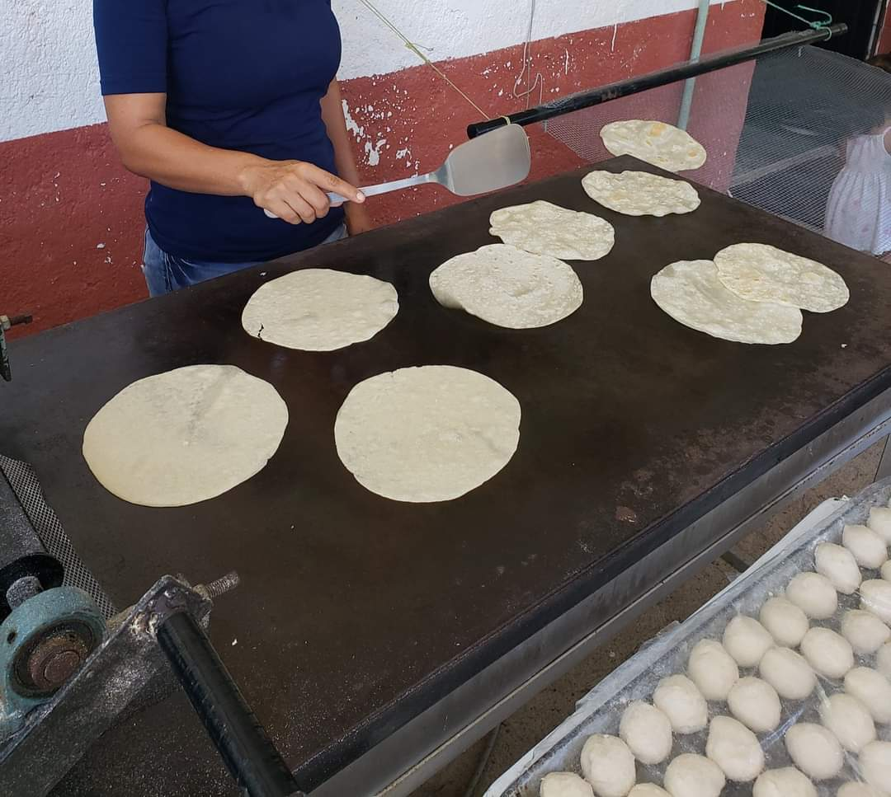
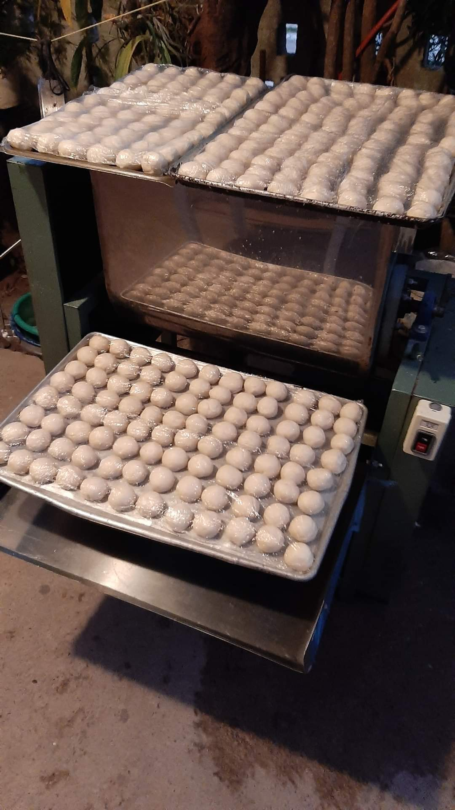
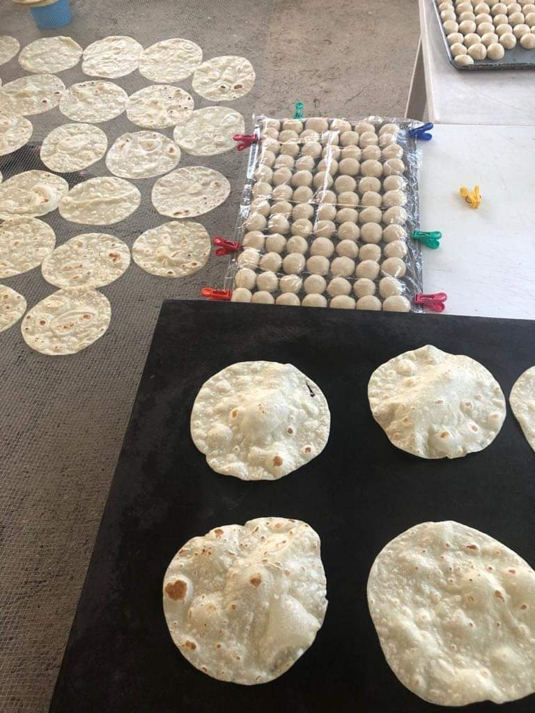

En Tortillas de Harina Nazly, comenzamos con la mejor masa, amasándola cuidadosamente. Luego, utilizamos una máquina casera para dar forma a cada tortilla. Finalmente, cocinamos nuestras tortillas en un comal tradicional, lo que les brinda un sabor auténtico. Este proceso es una tradición familiar en la que participan nuestros hijos, asegurando calidad y dedicación en cada tortilla que hacemos.
TORTILLAS DE HARINA NAZLY
Cómo Trabajamos


